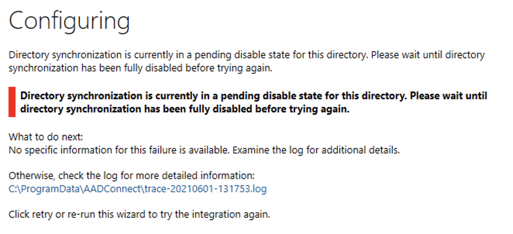

Migrating an SHM¶
This document assumes that you have already deployed a Safe Haven Management (SHM) environment and one or more Secure Research Environments (SRE) that are linked to it.
It will help you update the SHM to a newer release by deploying a new SHM and migrating the users to it.
:mailbox_with_mail: Table of contents¶
:unlock: 2. Disconnect the old domain controller from the Azure Active Directory
:file_folder: 5 Ensure the Azure Active Directory domain is registered
:key: 6. Deploy Key Vault for SHM secrets and create emergency admin account
Explanation of symbols used in this guide¶

This indicates a
Powershellcommand which you will need to run locally on your machineEnsure you have checked out the appropriate version of the Safe Haven repository from https://github.com/alan-turing-institute/data-safe-haven.
Open a
Powershellterminal and navigate to the indicated directory of your locally checked-out version of the Safe Haven repositoryEnsure that you are logged into Azure by running the
Connect-AzAccountcommand:pencil: If your account is a guest in additional Azure tenants, you may need to add the
-Tenant <Tenant ID>flag, where<Tenant ID>is the ID of the Azure tenant you want to deploy into.
This command will give you a URL and a short alphanumeric code.
You will need to visit that URL in a web browser, enter the code and log in to your account on Azure
:pencil: If you have several Azure accounts, make sure you use one that has permissions to make changes to the subscription you are using

This indicates a command which you will need to run remotely on an Azure virtual machine (VM) using
Microsoft Remote DesktopOpen
Microsoft Remote Desktopand clickAdd Desktop/Add PCEnter the private IP address of the VM that you need to connect to in the
PC namefield (this can be found by looking in the Azure portal)Enter the name of the VM (for example
DC1-SHM-TESTA) in theFriendly namefieldClick
AddEnsure you are connected to the SHM VPN that you have set up
Double click on the desktop that appears under
Saved DesktopsorPCs.Use the
usernameandpasswordspecified by the appropriate section of the guide:pencil: If you see a warning dialog that the certificate cannot be verified as root, accept this and continue.

This indicates an operation which needs to be carried out in the
Azure Portalusing a web browser on your local machine.You will need to login to the portal using an account with privileges to make the necessary changes to the resources you are altering

This indicates an operation which needs to be carried out in the
Azure Portalusing a web browser on your local machine.You will need to login to the portal using an account with administrative privileges on the
Azure Active Directorythat you are altering.Note that this might be different from the account which is able to create/alter resources in the Azure subscription where you are building the Safe Haven.
:pencil: Notes
This indicates some explanatory notes or examples that provide additional context for the current step.
:warning: Troubleshooting
This indicates a set of troubleshooting instructions to help diagnose and fix common problems with the current step.
These indicate steps that depend on the OS that you are using to deploy the SHM
:seedling: 1. Prerequisites¶
All of the Safe Haven Management (SHM) environment prerequisites
The following variables will be used during deploying
<old SHM ID>: the management environment ID for the previously deployed SHM<SHM ID>: the management environment ID for the new SHM you want to deploy<AAD tenant ID>: theTenant IDfor the Azure Active Directory that your previously deployed SHM is connected to
:unlock: 2. Disconnect the old domain controller from the Azure Active Directory¶

Log into the SHM primary domain controller for the old SHM (
DC1-SHM-<old SHM ID>) VM using theprivate IP address,<admin login>and<admin password>from the portalOpen Powershell as an administrator
Navigate to
C:\InstallationRun
.\Disconnect_AD.ps1You will need to provide login credentials (including MFA if set up) for
<admin username>@<SHM domain>
:warning: Do not attempt to add users to the old SHM after this point as they will not be synchronised to the Azure Active Directory!
:pencil: Notes¶
Full disconnection of the Azure Active Directory can take up to 72 hours but will typically take around one day
:clipboard: 3. Safe Haven Management configuration¶
Create a copy of the configuration file for your previous SHM
You may want to change some of the following attributes:
{
"azure": {
"subscriptionName": "Azure subscription to deploy the SHM into. You might want to use a different subscription than for your previous SHM.",
},
"shmId": "The <SHM ID> for the new SHM. If you try to deploy two SHMs with the same ID into the same subscription some resources will not deploy correctly.",
}
:door: 4. Configure DNS for the custom domain¶

./deployment/safe_haven_management_environment/setup
See the Safe Haven Management documentation for more details
:file_folder: 5 Ensure the Azure Active Directory domain is registered¶
./deployment/safe_haven_management_environment/setup
See the Safe Haven Management documentation for more details
:pencil: Notes¶
You will need to use an AAD global admin when the
AzureADmodule asks you to sign-in.
:key: 6. Deploy Key Vault for SHM secrets and create emergency admin account¶

./deployment/safe_haven_management_environment/setup
See the Safe Haven Management documentation for more details
:pencil: Notes¶
You will need to use an AAD global admin when the
AzureADmodule asks you to sign-in.
:station: 7. Deploy network and VPN gateway¶

./deployment/safe_haven_management_environment/setup
Follow the Safe Haven Management documentation for instructions on VPN gateway setup
:house_with_garden: 8. Deploy the domain controllers¶

./deployment/safe_haven_management_environment/setup
See the Safe Haven Management documentation for more details
:pencil: Notes¶
Do not run any of the domain controller configuration steps yet
:zap: 9. Configure the new domain controllers¶
:lock_with_ink_pen: Suspend MFA for all users¶

From the Azure portal, navigate to the AAD.
Click
Securityin the left hand sidebarClick
Conditional accessin the left hand sidebarClick the
Require MFApolicy from the policy listToggle
Enable policytoOffClick the
Savebutton
:busts_in_silhouette: Copy SHM users from old domain controller¶

./deployment/safe_haven_management_environment/setup
PS> ./Copy_SHM_Users.ps1 -oldShmId <old SHM ID> -newShmId <SHM ID>
where
<old SHM ID>is the management environment ID for the previously deployed SHMwhere
<SHM ID>is the management environment ID for this SHM
:anchor: Reset Azure AD source anchors¶

Log into the SHM primary domain controller (
DC1-SHM-<SHM ID>) VM that you have just deployed using theprivate IP address,<admin login>and<admin password>that you obtained from the portal
Run the following Powershell commands
# Get local users
$userOuPath = (Get-ADObject -Filter * | Where-Object { $_.Name -eq "Safe Haven Research Users" }).DistinguishedName
$users = Get-ADUser -Filter * -SearchBase "$userOuPath" -Properties *
# Connect to AzureAD
# Use the credentials for an AzureAD global admin (eg. `aad.admin.firstname.surname@<SHM domain>`)
Connect-MsolService
# Reset source anchor for AzureAD users
foreach ($user in $users) {
$immutableId = [System.Convert]::ToBase64String($user.ObjectGUID.ToByteArray())
Set-MsolUser -UserPrincipalName $($user.UserPrincipalName) -immutableID $immutableId
Write-Host "Set source anchor for $($user.UserPrincipalName) to $immutableId"
}
:pencil: Notes¶
Note that all research users in this SHM will have to go to
aka.ms/ssprto reset their passwords although their MFA configuration will stay the same
:train: Install Azure Active Directory Connect¶
See the Safe Haven Management documentation for more details
:pencil: Notes¶
Since you are trying to connect the new SHM to an Azure Active Directory that was already synchronised, you may find the AzureADConnect installation fails with an error like the one below. If this happens then you will need to wait for up to 72 hrs for the previous disconnection to complete.
Directory synchronisation failure

:recycle: Update Azure Active Directory Connect rules¶
See the Safe Haven Management documentation for more details
:put_litter_in_its_place: Unregister the old domain controller in Azure Active Directory¶

From the Azure portal, navigate to the AAD you have created.
Select
Azure AD Connectfrom the left hand menuUnder
Health And AnalyticsclickAzure AD Connect HealthSelect
Sync servicesfrom the left hand menuClick on
<Safe Haven identifier>.onmicrosoft.comwhoseStatuswill be marked asUnhealthyClick on the
Azure Active Directory Connect Serverthat corresponds to the old DC (marked asUnhealthy)Click
Deletein the top bar, type the server name when prompted then clickDelete
:ballot_box_with_check: Validate Active Directory synchronisation¶
See the Safe Haven Management documentation for more details
:police_car: 10. Deploy and configure network policy server¶
./deployment/safe_haven_management_environment/setup
See the Safe Haven Management documentation for more details
:closed_lock_with_key: 11. Require MFA for all users¶

See the Safe Haven Management documentation for more details
:fire_engine: 12. Deploy firewall¶
./deployment/safe_haven_management_environment/setup
See the Safe Haven Management documentation for more details
:package: 13. Deploy Python/R package repositories¶

./deployment/safe_haven_management_environment/setup
See the Safe Haven Management documentation for more details
:chart_with_upwards_trend: 14. Deploy logging¶
./deployment/safe_haven_management_environment/setup
See the Safe Haven Management documentation for more details